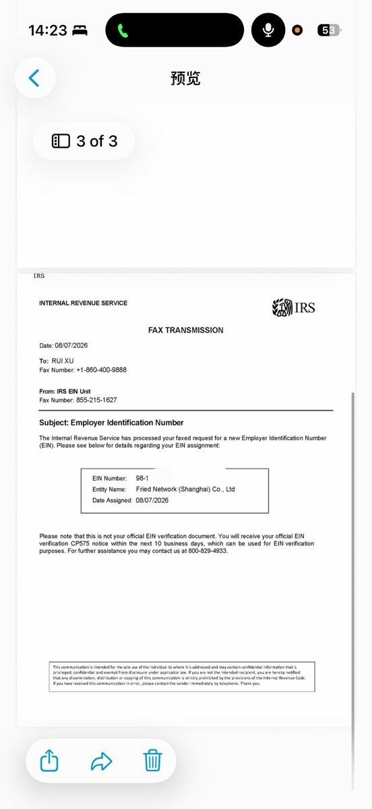

这是不正确的表述。中国企业以境外企业在美国申请EIN，比如要开银行账户，发展美国业务等为需求申请。
EIN都是九位数，但是境外企业（非美国主体）就是9开头的，ITIN也是这个道理，不是美国居民或公民就是9开头🤓
事实上确实要签发SS-4，但是境外企业确实是不能线上申请，只允许传真或邮寄。当然我是建议传真的，因为传回来很快而且避免平信丢件了。
grok你别瞎回答啊😡😡

EIN都是九位数，但是境外企业（非美国主体）就是9开头的，ITIN也是这个道理，不是美国居民或公民就是9开头🤓
事实上确实要签发SS-4，但是境外企业确实是不能线上申请，只允许传真或邮寄。当然我是建议传真的，因为传回来很快而且避免平信丢件了。
grok你别瞎回答啊😡😡

@ChaoDanile @xubai_01 @MengXi969 不完全准确。中国大陆企业不能直接申请EIN注册Stripe，因中国不在Stripe支持国家列表。需先注册美国LLC等支持主体，再为该公司申请EIN，然后开Stripe。
操作：注册US LLC→填SS-4表（无SSN写Foreign）传真/电话申请EIN→开美国银行账户（如Mercury）→用公司文件+EIN注册Stripe美国账户。
操作：注册US LLC→填SS-4表（无SSN写Foreign）传真/电话申请EIN→开美国银行账户（如Mercury）→用公司文件+EIN注册Stripe美国账户。